Offside was exhibited as a 20-image photographic installation at the Fouts Center for Visual Arts, Whitman College. The work was printed and installed as part of the Intermediate Photography course final exhibition. During the exhibition period, the project received acknowledgment from multiple faculty members and peers who engaged with its social justice intent and visual argument.
Offside
Offside — in football, the rule that declares a player out of place, ineligible, unwelcome in the space they occupy. Here, a metaphor for what African players are made to feel every time they cross a border.
A 20-image photographic narrative tracing the full trajectory of African footballers — from the hope and sacrifice of departure, through the racial hostility of arrival, to the psychological toll it exacts, and finally to the acts of resistance that refuse to let the story end there.
Between Dreams and Borders
The world before departure. Through still life compositions of everyday objects — boots, passports, clocks, family photographs — this chapter argues that for many young African players, football is not sport. It is a strategy of survival, a collective wager placed by entire families on the body and talent of one person.


Upon Arrival
The dream lands — not in triumph, but in a system already prepared to use it. Drawing from the documented experiences of Vinícius Júnior, Mario Balotelli, Marcus Rashford, and Victor Osimhen, this chapter places the artist's own body inside the visual language of racial abuse.
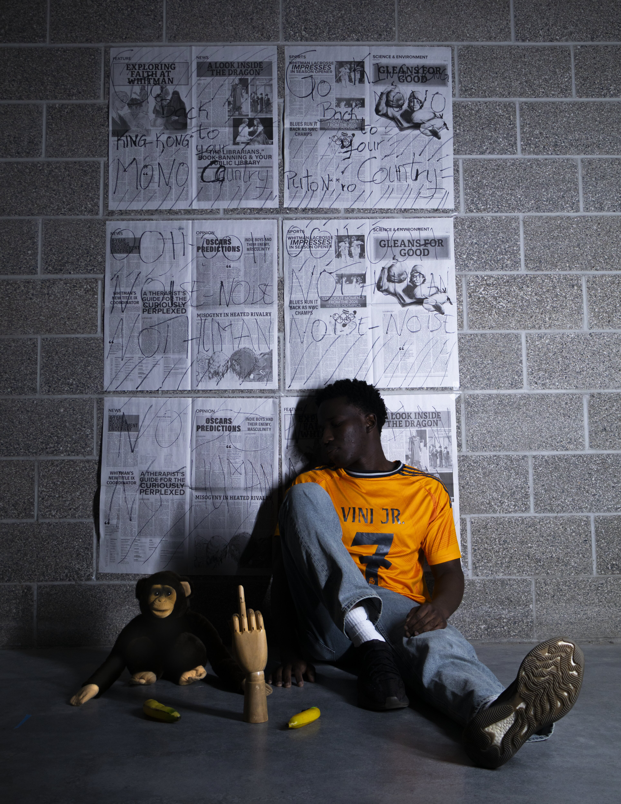
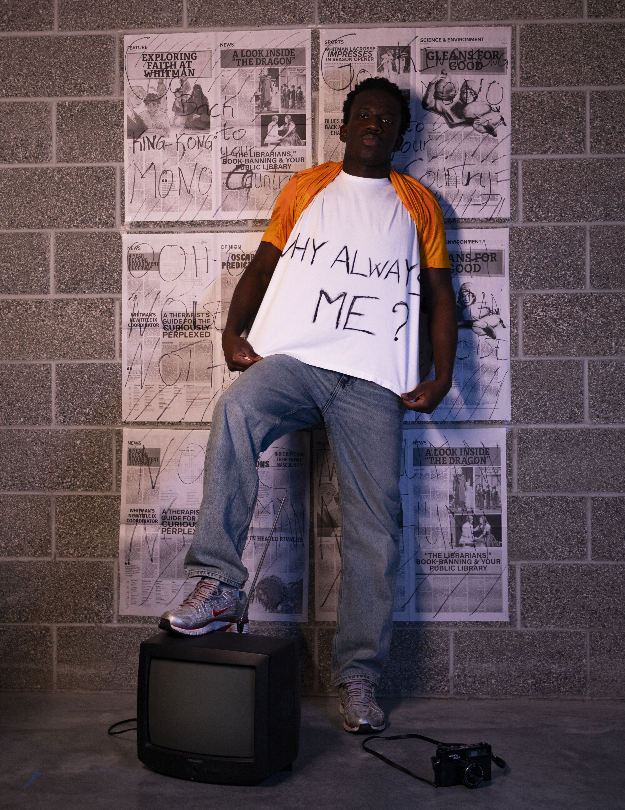

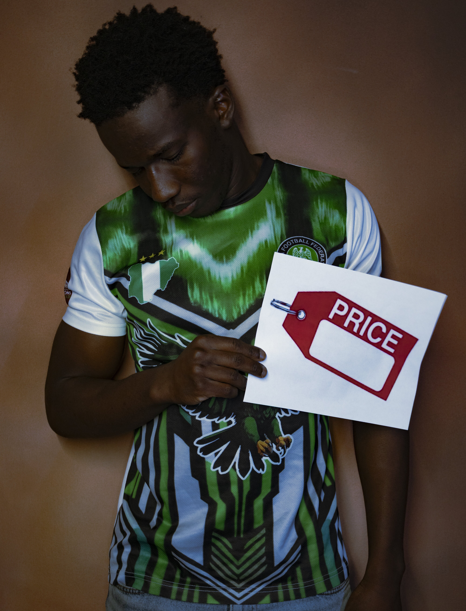
Impact
What the system produces in the body, mind, spirit, and emotions of a person who survives it. This chapter moves inward — from the visible hostility of the crowd and media to the psychological emptiness, spiritual anchoring, enforced silence, and the quiet of aftermath.

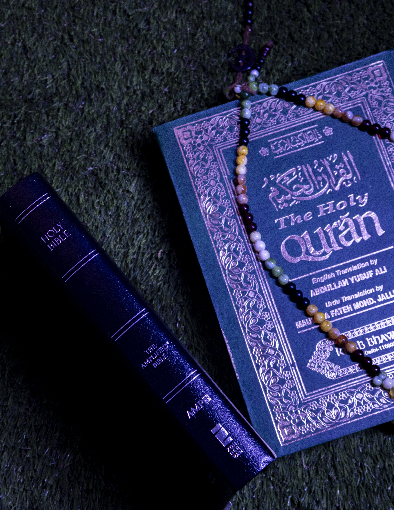
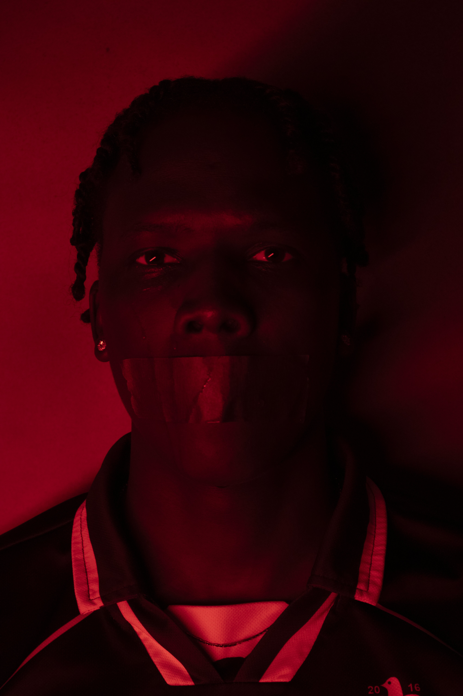
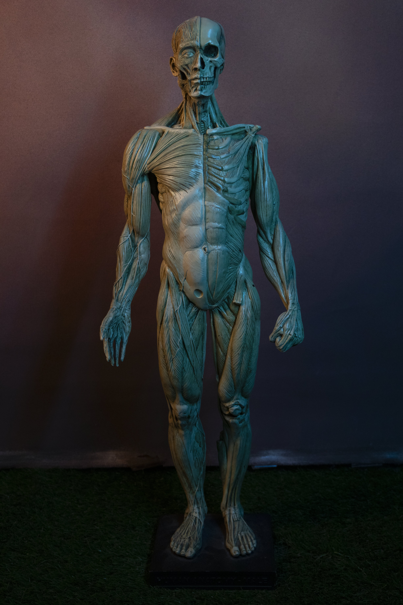
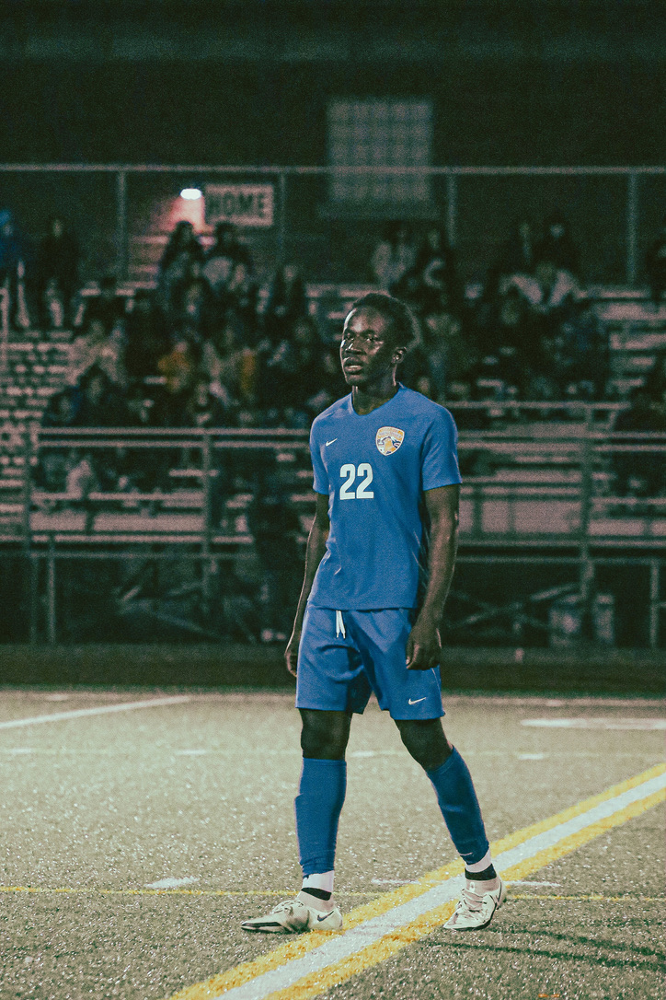

Resistance & Change
Knowledge, protest, solidarity, collective refusal, institutional accountability, and the final argument — beneath every visible difference, the substance is the same.

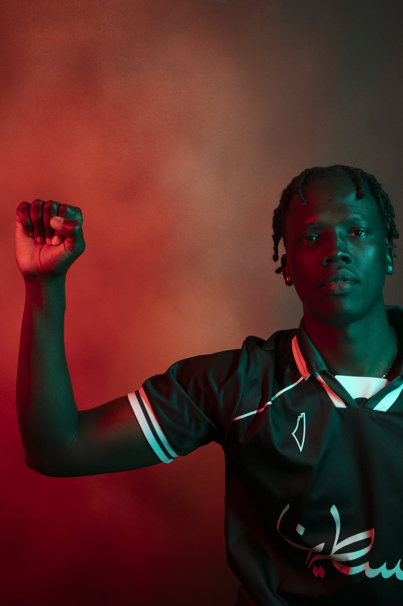
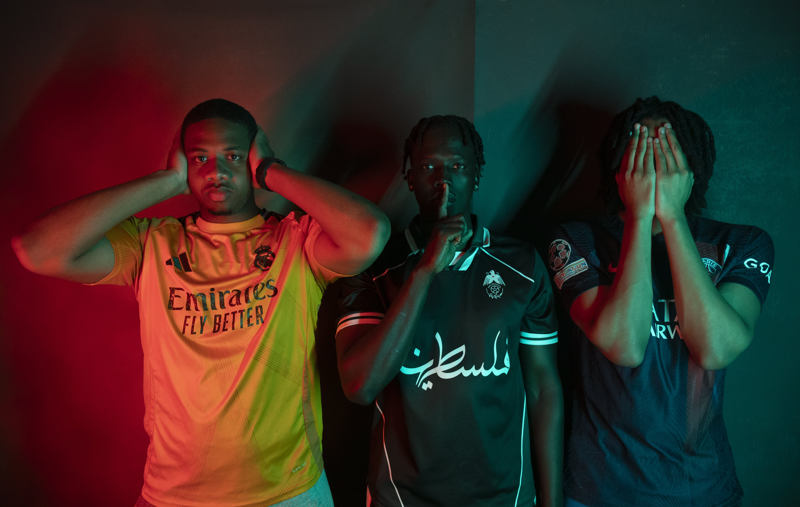
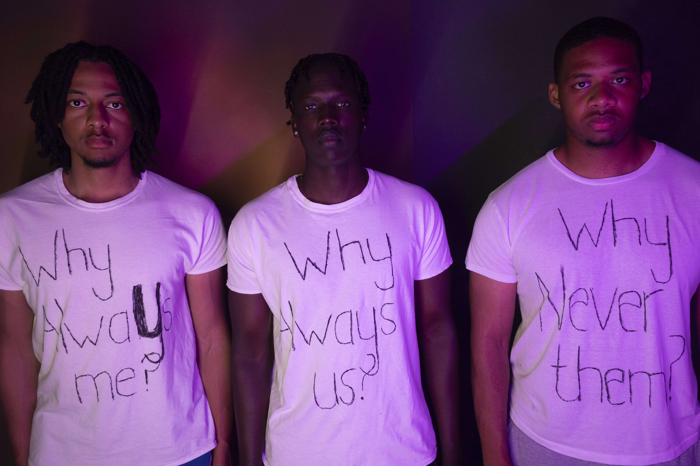

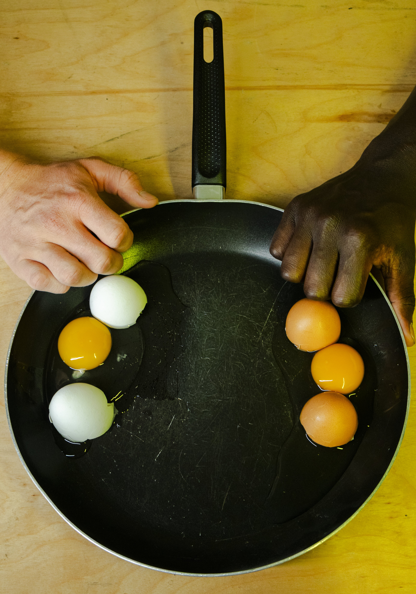
Ahmed Baba Tandia
Biography — EnglishAhmed Baba Tandia was born in January 2005 in Bamako, Mali, where he grew up until the age of thirteen, when he moved to the United States to join his siblings and continue his education. He is currently a rising senior at Whitman College in Walla Walla, Washington, pursuing a Bachelor's degree in Computer Science, with a graduation date set for May 2027. Alongside his studies, he serves as a Software Engineer Intern at Microsoft — a practice that runs parallel to, and informs, his commitment to using technology and visual art as tools for social change.
Football has been a constant throughout his life. He played competitively through his senior year of high school, after which he was offered a full academic scholarship to attend Whitman College. It is through the sport that his relationship to questions of race, belonging, and visibility first formed — long before they became the subject of his photography.
Beyond football and software, Tandia practices Brazilian Jiu-Jitsu — a discipline introduced to him by his older brother Bousseye, who is passionate about combat sports and loves watching UFC. Tandia holds a blue belt, competes regularly, and coaches the children's program at his academy. At Whitman, his technical work was recognized early: as a freshman, his project received an honorable mention at the college's inaugural Hackathon; the following year, competing as part of a four-person team, he took first place.
Tandia's relationship with photography began informally, during Eid celebrations gathering with family, where he was always the one behind the camera — playfully competing with his older brother Mohamed over who could find the best light and the strongest frame. What started as a game became a serious practice when, in the spring semester of his junior year, he enrolled in Intermediate Photography at Whitman College under Professor Robin North.
It was during that course — researching notable photographers for a class presentation — that Tandia encountered the work of Omar Victor Diop. His project Diaspora, in which he uses self-portraiture and football references to explore the duality of Black visibility and exclusion, gave Tandia a language for something he had long felt but had not yet known how to express. He had always wanted to do something — he just never knew how, until then.
The result was Offside — a 20-image photographic narrative structured in four chapters, tracing the full arc of the African footballer's journey: the hope and sacrifice before departure, the racial hostility of arrival in Western leagues, the psychological and physical toll exacted by that system, and the acts of resistance that refuse to let the story end there. What began as a class project is now the foundation of an ongoing social justice initiative — a practice Tandia has committed to as a vehicle for fighting racism and cultural injustice through visual storytelling.
Ahmed Baba Tandia
Biographie — FrançaisAhmed Baba Tandia est né en janvier 2005 à Bamako, au Mali, où il a grandi jusqu'à l'âge de treize ans, avant de rejoindre ses frères et sœurs aux États-Unis pour poursuivre ses études. Il est actuellement étudiant en dernière année à Whitman College, à Walla Walla dans l'État de Washington, où il prépare une licence en informatique, avec une date de diplôme prévue en mai 2027. En parallèle de ses études, il exerce en tant qu'ingénieur logiciel stagiaire chez Microsoft — une pratique qui complète et nourrit son engagement à utiliser la technologie et l'art visuel comme outils de changement social.
Le football a été une constante tout au long de sa vie. Il a joué de manière compétitive jusqu'en terminale, après quoi il s'est vu offrir une bourse académique complète pour intégrer Whitman College et y poursuivre ses études. C'est à travers ce sport que sa relation aux questions de race, d'appartenance et de visibilité s'est d'abord formée — bien avant qu'elles ne deviennent le sujet de sa photographie.
Au-delà du football et de l'informatique, Tandia pratique le Jiu-Jitsu Brésilien — une discipline que lui a fait découvrir son frère aîné Bousseye, passionné de sports de combat et grand amateur d'UFC. Tandia est ceinture bleue, participe régulièrement à des compétitions et entraîne les enfants au sein de son académie. À Whitman, sa rigueur technique a été reconnue très tôt : en première année, son projet a reçu une mention honorable lors du premier Hackathon de l'établissement ; l'année suivante, en équipe de quatre, il a remporté la première place.
Sa relation avec la photographie a débuté de façon informelle, lors des célébrations de l'Aïd en famille, où il était toujours celui derrière la caméra — rivalisant amicalement avec son frère aîné Mohamed pour trouver la meilleure lumière et le meilleur cadrage. Ce qui avait commencé comme un jeu est devenu une pratique sérieuse lorsque, au semestre de printemps de sa troisième année, il s'est inscrit au cours de photographie intermédiaire à Whitman College, sous la direction du professeur Robin North.
C'est durant ce cours que Tandia a découvert l'œuvre d'Omar Victor Diop. Son projet Diaspora, dans lequel il utilise l'autoportrait et des références au football pour explorer la dualité entre visibilité et exclusion des Noirs, a donné à Tandia un langage pour quelque chose qu'il ressentait depuis longtemps sans savoir comment l'exprimer. Il avait toujours voulu faire quelque chose — il ne savait simplement pas comment, jusqu'alors.
Offside — un récit photographique de 20 images structuré en quatre chapitres — retrace l'arc complet du parcours du footballeur africain : l'espoir et le sacrifice avant le départ, l'hostilité raciale à l'arrivée dans les ligues occidentales, le tribut psychologique et physique qu'impose ce système, et les actes de résistance qui refusent de laisser l'histoire s'arrêter là. Ce qui a commencé comme un projet de classe est aujourd'hui le fondement d'une initiative de justice sociale — une pratique à laquelle Tandia s'est engagé pour lutter contre le racisme et les injustices culturelles à travers la narration visuelle.
Get in Touch
For exhibition inquiries, press, collaborations, or to discuss the work.
OFFSIDE
Artist Statement — Ahmed Baba Tandia — 2026There is a moment, somewhere between the departure and the debut, where the dream becomes a debt. A family has sold what it could. A clock has been stopped. A passport waits in someone else's hands. A ball, worn and scuffed, holds more hope than it was ever designed to carry. This is where my project begins: not on the pitch, not under the stadium lights, but in the quiet, pressurized space of before.
Between Dreams and Borders began as a visual inquiry into what African footballers leave behind and what they carry with them. Using still life photography inspired by the work of Omar Victor Diop — who has long used objects and staging to restore dignity and complexity to African subjects — I arranged ordinary things: boots, clocks, money, family photographs. These are not props. They are arguments. They say that for many young players crossing from the African continent into European leagues, football is not a sport. It is a strategy of survival, a collective wager placed by entire families on the body and talent of one person.
Upon Arrival continues that story. It asks what happens when the dream lands — not in triumph, but in a system already prepared to use it. Wearing the jerseys of Vinícius Júnior, Balotelli, Rashford, and Osimhen, I place my own body inside the visual language of their documented experiences: the monkey chant and the stuffed animal, the media wall and the price tag, the grass and the covered face. These images do not illustrate those cases. They inhabit them.
The third and fourth series extend the narrative inward and then outward. The Impact chapter makes visible what systems produce in the body and mind of a person: the empty chair where treatment should be, the tape across the mouth, the part-human, part-machine skeleton, the path curving into uncertain light. The final chapter refuses to end there. Books hold up boots. A protest gesture with its fist raised while the body kneels. Two cracked eggs in the same pan make the argument that no headline ever could. Racism is constructed. The substance is the same.
Twenty images. Four chapters. One continuous story about what it costs to carry a dream across a border — and what it takes to refuse the terms of arrival.
Documenting Injustice.
One Story at a Time.
This work begins with African footballers, but it does not end there. The camera is a tool for testimony — and testimony is needed wherever systems of power produce silence, suffering, and erasure. What follows is a map of where the work is going: the investigations I am committed to pursuing, the communities I intend to engage, and the stories that the world has not yet been asked to sit with.
The Journey, Documented
The next phase of Offside moves from studio and concept to field and testimony. I plan to travel across West African countries — Mali, Ivory Coast, Senegal, Ghana, Nigeria — to document the conditions that shape a young player's decision to leave: the academies, the families, the agents, the departure rituals. From there, the work continues in Western Europe — France, United Kingdom, Spain, Italy — where I intend to interview professional African footballers who have experienced racial abuse directly, building a photographic and oral archive that grounds the project in documented lived experience rather than representation alone.
The Underdeveloped Continent
Inspired by Walter Rodney's foundational text How Europe Underdeveloped Africa, this project will examine how colonial extraction and its aftermath continue to shape everyday African life — in education systems that still teach the histories of colonial powers while erasing African figures like Thomas Sankara and Patrice Lumumba, in economies hollowed out by imperial debt structures, in the lived experience of a generation told their poverty is geographical destiny rather than the direct product of centuries of organized theft.
The Silence They Demand
This project will address a specific and devastating form of cultural injustice that persists across African households and communities: the enforced silence placed on survivors of sexual abuse within families, where the preservation of a family name is treated as more important than the safety and dignity of the victim. This work will be built through sustained trust relationships with survivors and advocates, using photography and testimony to name what is systematically unnamed, and to insist that justice cannot coexist with silence.
Beyond Africa — A Global Practice
The injustices I document are not uniquely African — they are expressions of global patterns of power, extraction, and erasure that operate across continents and communities. My long-term practice is committed to expanding beyond the African context into the broader landscape of global social and cultural injustice: education systems that fail children of color worldwide, political corruption that steals futures from those who have the least, and economic structures that ensure poverty is inherited. This is not a single project. It is a lifetime of work — and it begins here.